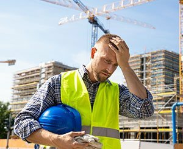
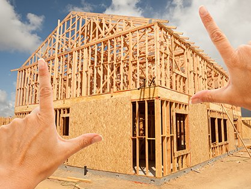
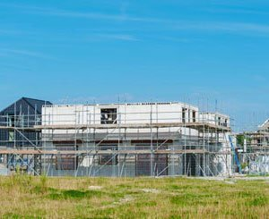

La CAPEB prend acte de l’adoption définitive du Projet de Loi de Financement de la Sécurité Sociale pour 2025 (PLFSS), qui comporte des mesures défavorables pour les entreprises artisanales du bâtiment. L’alourdissement des charges patronales par la révision de la réduction générale des cotisations impose un fardeau supplémentaire aux artisans, déjà fragilisés par une conjoncture économique difficile, alors qu’il conviendrait, au contraire, d’accompagner ce secteur essentiel à l’emploi local et à la transition écologique. Par ailleurs, en augmentant les charges qui pèsent sur le salaire des apprentis, ce texte risque d’affaiblir leur pouvoir d’achat, de compromettre la montée en compétences de l’artisanat du bâtiment – tout particulièrement fondée sur l’apprentissage – ainsi que l’attractivité de ces métiers, à un moment où le secteur devra créer jusqu’à 300.000 emplois d’ici 2030. La CAPEB déplore ces décisions contre-productives et pénalisantes pour les entreprises artisanales du bâtiment.
Recevez gratuitement la quotidienne du Bâtiment Inscrivez votre adresse E-mail Je m'abonne La CAPEB prend acte de l’adoption définitive du Projet de Loi de Financement de la Sécurité Sociale pour 2025 (PLFSS), qui comporte des mesures défavorables pour les entreprises artisanales du bâtiment. L’alourdissement des charges patronales par la révision de la réduction générale des cotisations impose un fardeau supplémentaire aux artisans, déjà fragilisés par une conjoncture économique difficile, alors qu’il conviendrait, au contraire, d’accompagner ce secteur essentiel à l’emploi local et à la transition écologique. Par ailleurs, en augmentant les charges qui pèsent sur le salaire des apprentis, ce texte risque d’affaiblir leur pouvoir d’achat, de compromettre la montée en compétences de l’artisanat du bâtiment – tout particulièrement fondée sur l’apprentissage – ainsi que l’attractivité de ces métiers, à un moment où le secteur devra créer jusqu’à 300.000 emplois d’ici 2030. La CAPEB déplore ces décisions contre-productives et pénalisantes pour les entreprises artisanales du bâtiment. Alourdissement des charges et transfert de coûts sur les entreprises artisanales La CAPEB déplore que le texte adopté vienne alourdir les charges des entreprises dans une conjoncture économique déjà difficile. La révision de la réduction générale des cotisations patronales entraînera une hausse des charges pour les chefs d’entreprise artisanale du bâtiment. L’intégration de la prime de partage de la valeur dans la rémunération utilisée pour calculer la réduction générale des cotisations patronales, avec une application rétroactive au 1er janvier 2025, est également un mauvais signal donné aux employeurs, qui pourraient désormais hésiter à accorder cette prime à leurs salariés. S’ajoute à cela un projet de décret visant à réformer les indemnités journalières (IJ) en ramenant la limite des salaires pris en compte pour le calcul du revenu d’activité antérieur de 1,8 à 1,4 SMIC. Ce changement réglementaire aboutira à transférer une charge supplémentaire aux entreprises et aux complémentaires santé, représentant un coût estimé entre 600 et 800 millions d’euros.

Valérie Létard, ministre chargée du Logement, s’est rendue le 20 février à Noirétable et Balbigny (Loire – 42) pour visiter les usines Ossabois spécialisées dans la construction hors-site en bois. À cette occasion, elle a échangé avec les acteurs de la construction et les élus sur les évolutions du secteur.
Cette visite s’inscrit dans la volonté du gouvernement de promouvoir une construction durable, innovante et adaptée aux défis climatiques et réglementaires. Le développement du bois dans la construction repose sur un cadre réglementaire qui accompagne cette transition et garantit la sécurité des habitants et professionnels du secteur. Les travaux interministériels engagés ont permis d’adapter la réglementation incendie aux nouvelles techniques constructives, assurant ainsi une meilleure intégration du bois et des matériaux biosourcés dans les projets de construction. Ces évolutions, qui seront présentées lors du Forum International Bois Construction, constituent une avancée majeure en conciliant l’impératif de sécurité avec la volonté de moderniser et d’industrialiser la filière. La construction hors-site, représente une véritable innovation pour le secteur du bâtiment. En permettant la préfabrication en usine de nombreux éléments de construction, cette méthode garantit une exécution industrialisée, optimisant ainsi les délais, les coûts et réduisant les nuisances potentielles. Par ailleurs, les bâtiments d’aujourd’hui et de demain sont amenés à contenir davantage de matériaux bas-carbone. Le bois est un matériau renouvelable, stockant naturellement du carbone tout au long de sa durée de vie. En France, la filière bois représente une véritable opportunité économique, avec une chaîne de valeur complète allant de la gestion forestière durable à la fabrication de composants bois innovants. Les principaux atouts du bois dans la construction sont :

Alors que la France a besoin de 400.000 nouveaux logements par an, à peine 59.014 ont été construits et mis en vente en 2024, soit 29% de moins que l'année précédente et presque moitié moins qu'en 2022, selon les données publiées mercredi 26 février par le ministère de l'Aménagement du territoire.
Hors année du Covid, environ 125.500 logements ont été mis en vente par an en moyenne entre 2017 et 2022. En 2024, ce chiffre n'atteint plus que 59.014, soit 29% de moins que l'année précédente et presque moitié moins qu'en 2022, selon les données publiées mercredi par le ministère de l'Aménagement du territoire. Les particuliers ont réservé 67.906 nouveaux logements l'année passée, 5% de moins qu'en 2023, année déjà catastrophique pour la production de nouveaux logements en raison de la hausse des coûts de construction et des taux d'intérêt qui ont bloqué les projets d'achat immobilier de nombreux ménages. Le nombre de réservations est près de 40% inférieur au niveau de 2022, et est moitié moins que le niveau moyen 2017-2022. "Tout est à jeter en 2024, c'est la pire année depuis plus de 50 ans et le début de nos statistiques", a réagi auprès de l'AFP Pascal Boulanger, président de la Fédération des promoteurs immobiliers. "La crise a nourri la crise : comme on ne vendait pas, on n'a pas produit (de nouveaux logements, NDLR), donc on n'a pas acheté de terrains et on a moins de collaborateurs", poursuit-il. Optimiste pour 2025, Pascal Boulanger s'inquiète néanmoins du redémarrage "de la machine" qui pourrait provoquer des hausses de prix : en raison de salaires plus importants "pour faire revenir les 5.000 collaborateurs qui ont quitté le métier" et de surenchères sur les terrains à vendre si tous les promoteurs se remettent "tous à acheter du foncier". Au quatrième trimestre, le prix moyen au mètre carré des appartements neufs commercialisés a été de 4.756 euros, en légère hausse de 0,5%, par rapport au trimestre précédent.
Le nombre de nouveaux logements commercialisés entre octobre et décembre a légèrement rebondi de 6,4% par rapport au trimestre précédent, à 14.335. Ce sont surtout des appartements qui ont été mis en vente au dernier trimestre (+8,1% sur un trimestre), tandis que le nombre de maisons commercialisées a continué de ralentir, de 15,5%. Les réservations de logements par des individus ont reculé de 4,2% au dernier trimestre, par rapport au précédent, à 17.122. Ce sont surtout des appartements que les particuliers ont réservé (16.331 logements). Concernant les maisons, 791 réservations ont été enregistrées au dernier trimestre, soit 8,9% de moins que lors des trois mois précédents. Le nombre de maisons réservées tombe à un nouveau plus bas depuis au moins 2019. Le stock de logements proposés à la vente, qui atteint un plus haut au milieu de l'année 2023, se résorbe très lentement : 117.472 logements étaient disponibles au dernier trimestre, 3% de moins que lors des trois mois précédents. "On a plein de stock car on n'a plus du tout de réservations, mais si les réservations reprennent à une vitesse normale, on a deux fois moins d'offres que lors d'une année normale", souligne Pascal Boulanger. Les mesures inscrites dans le budget 2025 de l'Etat pourraient relancer l'achat de logements chez les particuliers, selon le porte-parole des promoteurs, même s'il ne s'attend pas à "atteindre des sommets en 2025". "Il faudra entre deux et trois ans pour remettre la machine en route", prévient Pascal Boulanger. Sur le territoire, les zones les plus tendues en matière de logements disponible (Paris, une grande partie de l'Île-de-France, la Côte d'Azur et la zone frontalière avec la Suisse) ont concentré 50,7% des réservations et 47,2% des mises en vente comptabilisées au quatrième trimestre. Les autres grandes agglomérations de plus de 250.000 habitants ont représenté 40,4% des réservations et 39,4% des mises en vente.